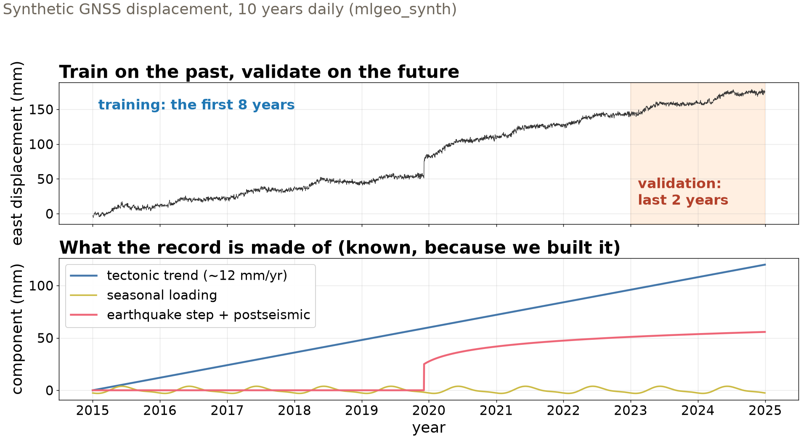
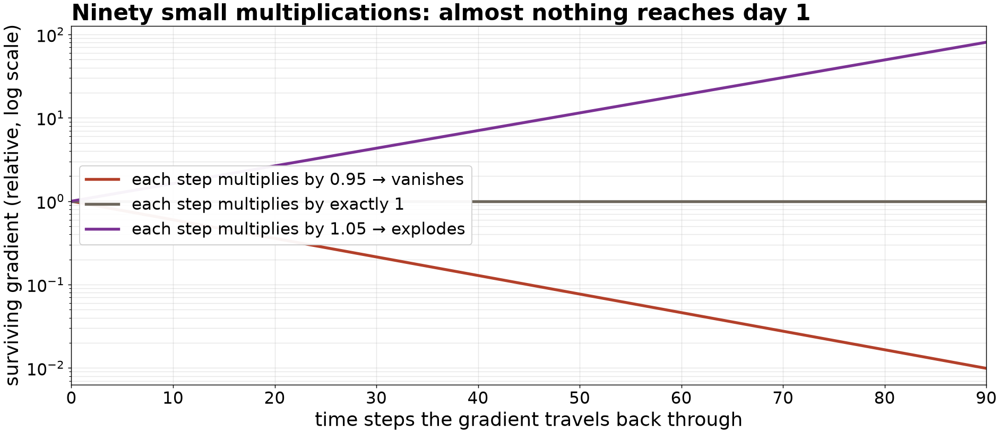

Session 23 · Mon Nov 23 · Book section 4.4
🔁
A forecast reads the past to write the future.
How does a network carry information across 90 days — and does it beat “tomorrow equals today”?
Reading: 4.4 Sequence models · HW-DL assigned today
📖 The gated memory cell that let gradients survive long sequences — 1997, still everywhere.
Hochreiter, S., & Schmidhuber, J. (1997). Long short-term memory. Neural Computation, 9(8), 1735–1780.
📖 Attention entered as an add-on to recurrent translation models; three years later the Transformer removed the recurrence entirely.
Bahdanau, D., Cho, K., & Bengio, Y. (2015). Neural machine translation by jointly learning to align and translate. ICLR 2015 (arXiv:1409.0473). — Vaswani, A., et al. (2017). Attention is all you need. Advances in Neural Information Processing Systems, 30.
✗ A field’s ML forecasters, finally raced against simple statistical baselines — and losing. Years of skipped baselines, recalibrated.
Makridakis, S., Spiliotis, E., & Assimakopoulos, V. (2018). Statistical and machine learning forecasting methods: Concerns and ways forward. PLOS ONE, 13(3), e0194889.
✓ Attention at planetary scale: a 3-D transformer forecaster judged head-to-head against the operational weather baseline — and winning honestly.
Bi, K., et al. (2023). Accurate medium-range global weather forecasting with 3D neural networks. Nature, 619, 533–538.
Memory (1997) → attention (2014) → attention only (2017) → the weather (2023). One thread, and today we build each link.

Context window = what the model reads; forecast horizon = what it must write. Temporal split, no window crossing the boundary — lecture 18’s rule, unchanged.

Training pushes the gradient back through all 90 steps — a product of ~90 factors. Slightly under one → vanishes; slightly over → explodes. Simple recurrent memory tops out at tens of steps.
One attention head is ~15 lines of code — and you will write them, from scratch, today.
| Model | Parameters | Val MAE, 30-day horizon |
|---|---|---|
| Persistence (tomorrow = today) | 0 | 2.10 mm |
| Seasonal naive (value 365 d ago) | 0 | 15.53 mm |
| Vanilla RNN | 2,110 | 1.83 mm |
| LSTM | 5,470 | 1.86 mm |
| Attention (from scratch) | 4,126 | 1.87 mm |
| Transformer encoder | 18,142 | 1.84 mm |
Same windows, same loss, same optimizer, same metric — MAE in millimeters over the 30-day horizon, so the numbers are directly comparable.
The learned models beat persistence by ~13% — real but modest. Seasonal naive fails because the 12 mm/yr trend makes last year systematically low: a baseline informs only when it matches the structure it targets.
| Session | Learned model | The baseline it faced | Verdict |
|---|---|---|---|
| Wed — MLP | PNW source classifier | Chapter 3 random forest | tie on tabular features |
| Fri — CNN | earthquake detector | STA/LTA at matched false alarms | wins half a decade of SNR |
| Today — sequence | GNSS forecasters | persistence, 0 parameters | +13%, all four architectures |
Architecture follows data structure: dense for tables, convolution for patterns that move, memory or attention for sequences. The baseline row decides whether any of it mattered.
pixi run jupyter lab → mlgeo_4.4_RNN.ipynb: build the windows, check no pair crosses the 8-year boundaryPyTorch names live here: nn.RNN, nn.LSTM, nn.TransformerEncoderLayer, register_buffer for positional encodings · classification leaderboard closes Tue · Wed: training lab I (4.5)
ESS 469/569 · Machine Learning in the Geosciences · Autumn 2026